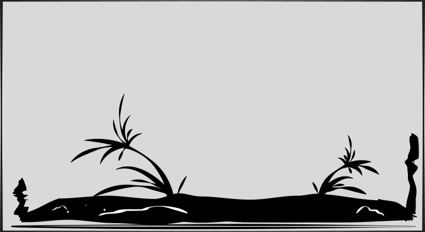
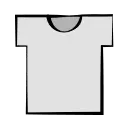
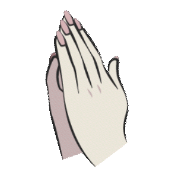
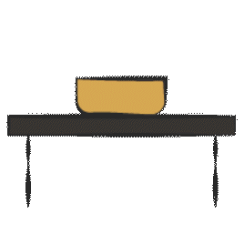
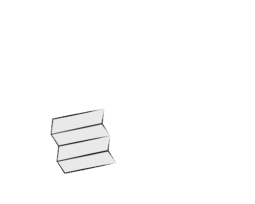

산지 지역에서 행해지던 종교적 의례와 공동체 중심의 재앙 해소 방식을 바탕으로 구성된 삼재풀이이다. 여러 사람이 역할을 나누어 기원과 경문을 올리고, 당사자의 옷과 부적을 함께 태우며 공동의 힘으로 액을 소멸시키는 특징을 가진다.
믿음을 나누고, 서로의 힘을 모아 해결하는 방식.
이 방식은 불안을 혼자 감당하기보다 함께 기원하고 의례를 수행하며 재앙을 극복하는 데 초점을 둡니다. 당신은 주변 사람들과 믿음을 공유하고 서로 의지하며, 공동의 힘을 통해 문제를 헤쳐 나갑니다.
풀이 방법
- 준비물
- 당사자의 윗옷, 치성을 드릴 간단한 음식, 삼재부적
- 인원
- 3인
- 방법
-
- 당사자의 윗옷을 준비해 삼거리에 간단한 제물을 차린다.

- 이후 당사자는 두 손을 모아 비손을 드리며 재앙이 물러가기를 기원하고, 다른 한 사람은 경문을 외운다.


- 의례가 끝나면 남은 한 사람이 삼재부적과 윗옷을 함께 태워 의식을 마무리한다.

*비손은 주로 한국 무속에서 병을 낫게 하거나 소원을 성취하기 위해 두 손을 비비며 신에게 기원하는 가장 간소한 형태의 무속 의례
- 당사자의 윗옷을 준비해 삼거리에 간단한 제물을 차린다.
- 해설
- 윗옷은 당사자의 몸을 대신하는 분신으로 여겨지며, 부적과 함께 태우는 것은 액운을 대신 담아 소멸시키는 의미를 가진다. 비손은 두 손을 비비며 신에게 평안과 소원을 비는 가장 간소한 무속 의례로, 재앙이 물러가기를 기원하는 행위이다. 경문은 신성한 힘을 불러들이고 의례의 효력을 더하는 역할을 하며, 삼거리는 재앙을 삶의 경계 밖으로 내보내는 공간으로 여겨졌다.
